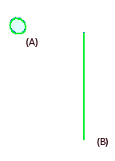
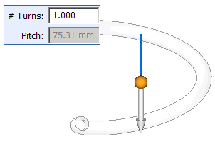
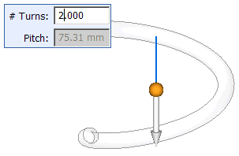
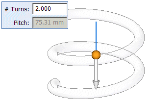
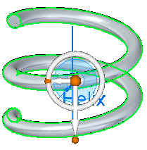
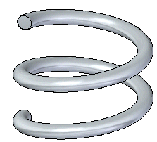

Construct a helical protrusion in the synchronous environment
-
Choose Home tab→Solids group→Add list→Helix
 .
. -
Select a sketch or region (A) for the cross section and a line (B) for the axis of revolution.

-
Right-click to accept.

-
Use the command bar and Helix Parameter dialog box to specify a creation method.
Note:You can define the helical path based on:
-
Axis length and pitch
-
Axis length and number of turns
-
Pitch and number or turns
-
-
Type the required values for the helix. The required information is dependent on the helix creation method you specify.

-
Click to define the helix direction.

-
Right-click to accept.

-
Click to create the helix.

How do I
Construct a helical protrusion or cutout in the ordered environmentConstruct a helical cutout
Move or edit a helix
Learn more
Constructing helical featuresLook up more details
Helical Protrusion commandHelical Cutout command
Helical Cutout/Protrusion command bar
Helical command bar
Helix Options dialog box (synchronous environment)
Helix Options dialog box (ordered environment)